Você morreu da peste. E voltou.You died of the plague. And came back.
Atrás de uma máscara de bico forrada com a pele de um morto, finja ser o médico da vila: diagnostique doentes, cure os vivos, use os mortos e descubra que crime trouxe a peste a Brumafria, antes que alguém veja o seu rosto.
Behind a beaked mask lined with a dead man's skin, pose as the village doctor: diagnose the sick, heal the living, use the dead and uncover the crime that brought the plague to Brumafria, before anyone sees your face.
The trailer is narrated in Portuguese, in the style of an old horror movie.
A versão do navegador roda melhor no computador. No iPhone, abra no Safari e use Compartilhar › Adicionar à Tela de Início para jogar em tela cheia.
The browser version runs best on a computer. On iPhone, open it in Safari and use Share › Add to Home Screen to play full screen.
Um médico da peste que já está mortoA plague doctor who is already dead
A casa de saúdeThe infirmary
Todas as manhãs o barqueiro traz doentes pelo rio. Junte os sintomas, acerte entre 22 doenças e trate com o remédio certo. Quem morre vai para o necrotério, e a necromancia agradece.
Every morning the boatman brings the sick down the river. Gather the symptoms, pick the right one among 22 diseases and treat it with the right remedy. Those who die go to the morgue, and necromancy is grateful.
O disfarce apodreceThe disguise rots
A máscara é feita com a pele dos mortos e apodrece com o tempo. Cheirando mal, a vila desconfia; sem ela, os vivos veem o rosto e os guardas vêm.
The mask is made from the skin of the dead and rots over time. When it stinks, the village grows suspicious; without it, the living see your face and the guards come.
Os mortos trabalhamThe dead do the work
Faça autópsias, erga zumbis que cortam lenha, aram a terra e carregam corpos. Cuide do cemitério, plante na várzea e amplie a casa de saúde até o Hospital de São Roque.
Perform autopsies, raise zombies that chop wood, till the soil and haul bodies. Tend the cemetery, farm the meadow and grow the infirmary into the Hospital of Saint Roch.
O seu próprio crimeYour own crime
Pó cinzento nos pulmões dos mortos, um sol negro nas portas. Cada pista leva ao Império além dos montes, e a você. No fim, a vila julga o seu último mês.
Grey dust in the lungs of the dead, a black sun on the doors. Every clue leads to the Empire beyond the mountains, and to you. In the end, the village judges your last month.
Fotos do jogoScreenshots

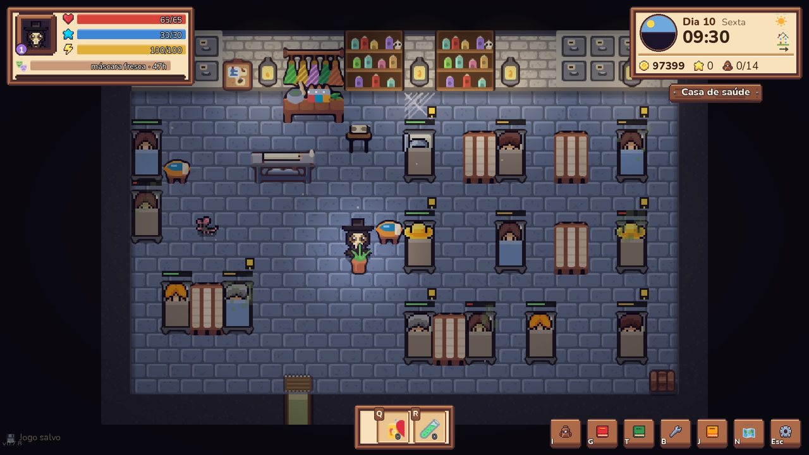

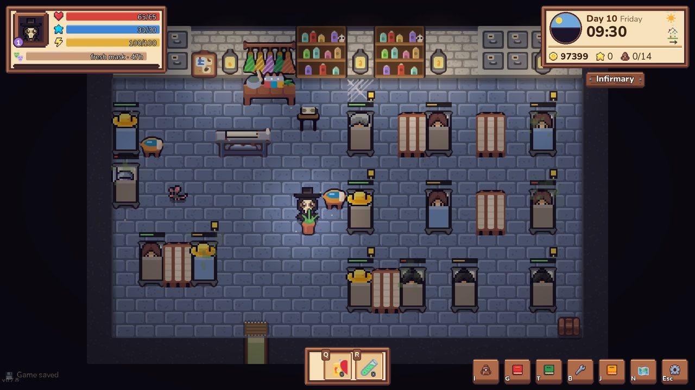

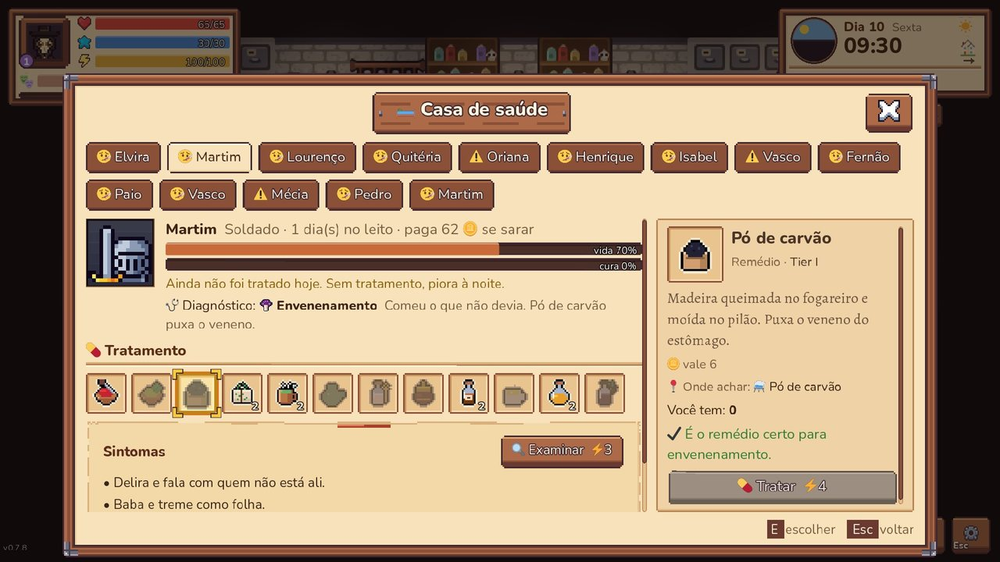

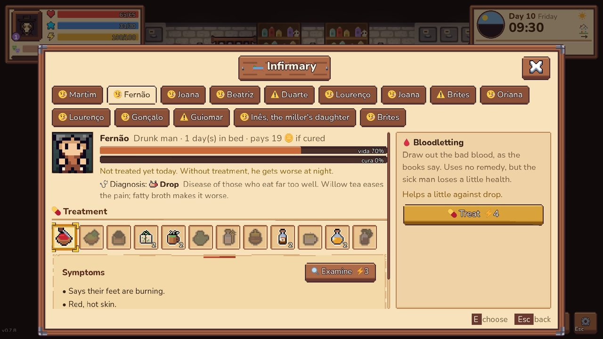

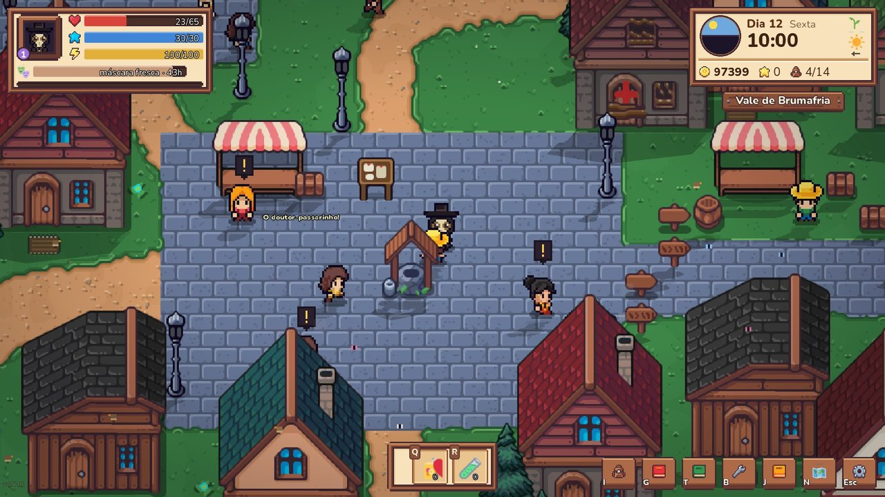

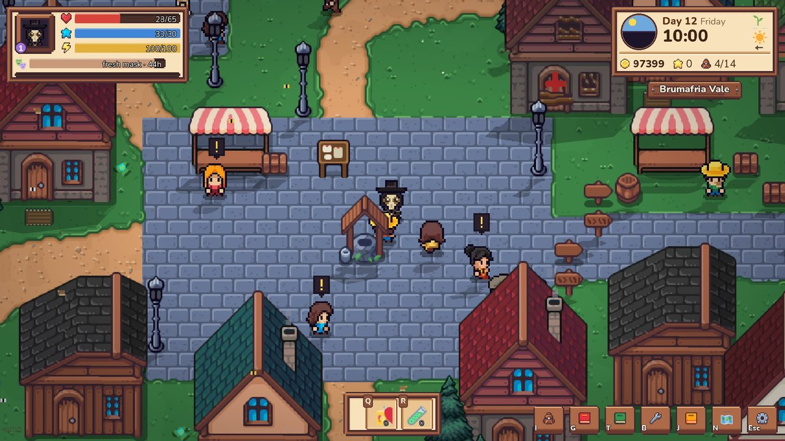

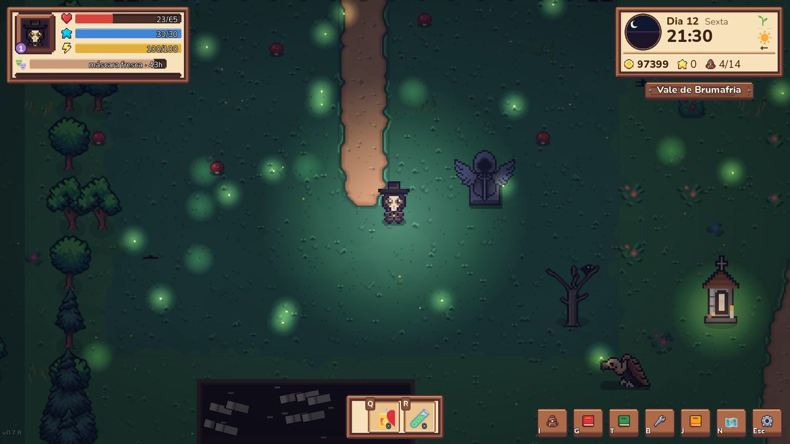

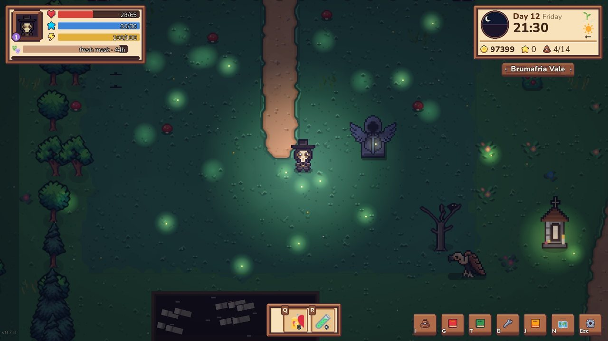

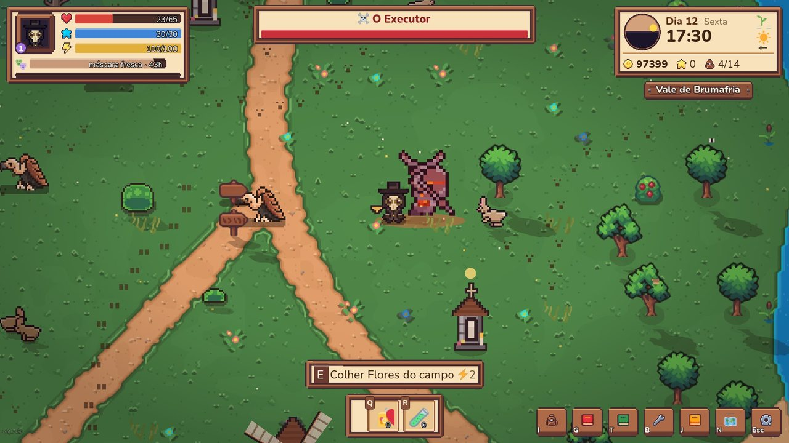

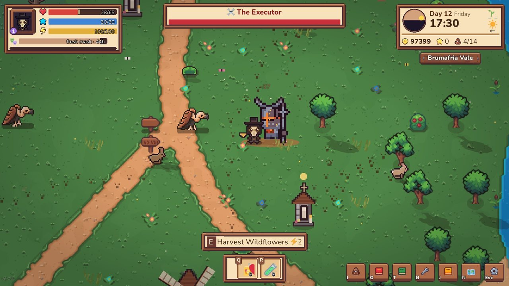

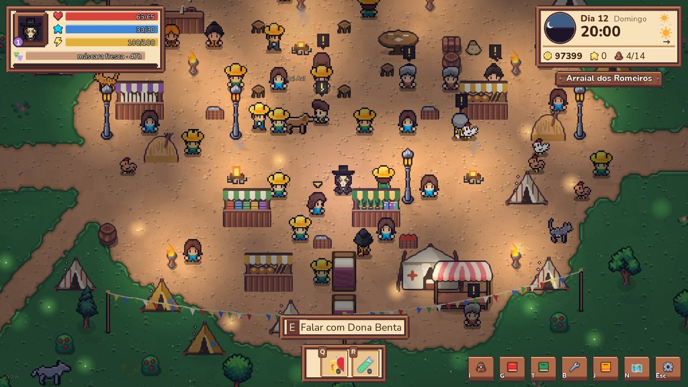

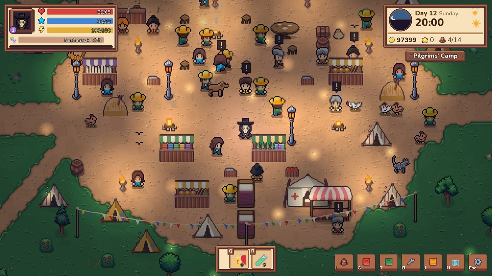
E aindaAnd also
- Um vale vivo: a vila, o cemitério, o brejo, os montes, a Ribeira dos Moleiros e o Arraial dos Romeiros, aberto só aos domingos.
- 18 chefes e 11 monstros grandes, com partes que quebram e armas forjadas com elas.
- Uma cripta que muda a cada visita e o Grande Mausoléu, sem fim.
- Estações, festas, feiras de domingo e moradores com rotina.
- Teclado e mouse ou controle, com teclas trocáveis e cores para daltonismo.
- Em português, inglês, espanhol e francês.
- A living vale: the village, the cemetery, the marsh, the mountains, the Millers' Riverside and the Pilgrims' Camp, open only on Sundays.
- 18 bosses and 11 large monsters, with breakable parts and weapons forged from them.
- A crypt that changes on every visit, and the endless Great Mausoleum.
- Seasons, festivals, Sunday fairs and villagers with daily routines.
- Keyboard and mouse or a controller, with remappable keys and colorblind colors.
- In English, Portuguese, Spanish and French.